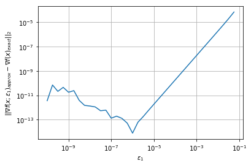
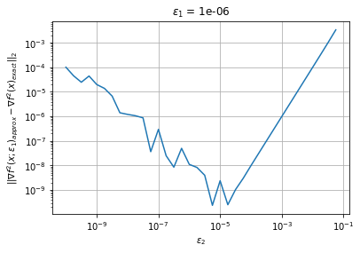

Algorithms Homework 2
Contents
Algorithms Homework 2#
## Load libraries
import matplotlib as plat
import matplotlib.pyplot as plt
import numpy as np
from scipy import linalg
from mpl_toolkits.mplot3d import Axes3D
from matplotlib import cm
import sympy as sym
# from sympy import symbols, diff
Finite Difference Approximations#
Main Idea: Explore the accuracy of the finite difference approximation for \(\nabla f(x)\) and \(\nabla^2 f(x)\) from Example 2.19.
Finite difference order#
Repeat the analysis from class to show the backward and central finite difference truncations errors are \(\mathcal{O}(\epsilon)\) and \(\mathcal{O}(\epsilon^2)\), respectively. We discussed these error orders graphically. Please use a Taylor series for your analysis.
Provided Codes#
Please review the following code. You do not need to turn anything in for this section.
Finite Difference Code#
The code below has been adapted from the finite difference examples presented in class. Notice the second input is a function.
## Define Python function
def my_f(x,verbose=False):
''' Evaluate function given above at point x
Inputs:
x - vector with 2 elements
Outputs:
f - function value (scalar)
'''
# Constants
a = np.array([0.3, 0.6, 0.2])
b = np.array([5, 26, 3])
c = np.array([40, 1, 10])
# Intermediates. Recall Python indicies start at 0
u = x[0] - 0.8
s = np.sqrt(1-u)
s2 = np.sqrt(1+u)
v = x[1] -(a[0] + a[1]*u**2*s-a[2]*u)
alpha = -b[0] + b[1]*u**2*s2+ b[2]*u
beta = c[0]*v**2*(1-c[1]*v)/(1+c[2]*u**2)
if verbose:
print("##### my_f at x = ",x, "#####")
print("u = ",u)
print("sqrt(1-u) = ",s)
print("sqrt(1+u) = ",s2)
print("v = ",v)
print("alpha = ",alpha)
print("beta = ",beta)
print("f(x) = ",)
print("##### Done. #####\n")
return alpha*np.exp(-beta)
## Calculate gradient with central finite difference
def my_grad_approx(x,f,eps1,verbose=False):
'''
Calculate gradient of function my_f using central difference formula
Inputs:
x - point for which to evaluate gradient
f - function to consider
eps1 - perturbation size
Outputs:
grad - gradient (vector)
'''
n = len(x)
grad = np.zeros(n)
if(verbose):
print("***** my_grad_approx at x = ",x,"*****")
for i in range(0,n):
# Create vector of zeros except eps in position i
e = np.zeros(n)
e[i] = eps1
# Finite difference formula
my_f_plus = f(x + e)
my_f_minus = f(x - e)
# Diagnostics
if(verbose):
print("e[",i,"] = ",e)
print("f(x + e[",i,"]) = ",my_f_plus)
print("f(x - e[",i,"]) = ",my_f_minus)
grad[i] = (my_f_plus - my_f_minus)/(2*eps1)
if(verbose):
print("***** Done. ***** \n")
return grad
## Calculate gradient using central finite difference and my_hes_approx
def my_hes_approx(x,grad,eps2):
'''
Calculate gradient of function my_f using central difference formula and my_grad
Inputs:
x - point for which to evaluate gradient
grad - function to calculate the gradient
eps2 - perturbation size (for Hessian NOT gradient approximation)
Outputs:
H - Hessian (matrix)
'''
n = len(x)
H = np.zeros([n,n])
for i in range(0,n):
# Create vector of zeros except eps in position i
e = np.zeros(n)
e[i] = eps2
# Evaluate gradient twice
grad_plus = grad(x + e)
grad_minus = grad(x - e)
# Notice we are building the Hessian by column (or row)
H[:,i] = (grad_plus - grad_minus)/(2*eps2)
return H
### Test the functions from above
## Define test point
xt = np.array([0,0])
print("xt = ",xt,"\n")
print("f(xt) = \n",my_f([0,0]),"\n")
## Compute gradient
g = my_grad_approx(xt,my_f,1E-6)
print("grad(xt) = ",g,"\n")
## Compute Hessian
# Step 1: Create a Lambda (anonymous) function
calc_grad = lambda x : my_grad_approx(x,my_f,1E-6)
# Step 2: Calculate Hessian approximation
H = my_hes_approx(xt,calc_grad,1E-6)
print("hes(xt) = \n",H,"\n")
xt = [0 0]
f(xt) =
1.6212212164426274e-06
grad(xt) = [1.49885593e-04 4.20936251e-05]
hes(xt) =
[[0.00082024 0.00387044]
[0.00387044 0.00102412]]
Analytic Gradient#
It turns out that calculating the analytic gradient with Mathematic quickly becomes a mess. Instead, the following code uses the symbolic computing capabilities in SymPy.
'''
Encoding the exact gradient with the long expression above is very time-consuming. This is a trick of calculating the
symbolic derivative and converting it to an analytic function to be evaluated at a point.
'''
# Define function to use with symbolic computing framework
def f(x1,x2):
a = np.array([0.3, 0.6, 0.2])
b = np.array([5, 26, 3])
b1 = 5;
c = np.array([40, 1, 10])
u = x1 - 0.8
v = x2 -(a[0] + a[1]*u**2*(1-u)**0.5-a[2]*u)
alpha = b[1]*u**2*(1+u)**0.5 + b[2]*u -b[0]
beta = c[0]*v**2*(1-c[1]*v)/(1+c[2]*u**2)
return alpha*sym.exp(-1*beta)
# Define function to use later
def my_grad_exact(x):
x1, x2 = sym.symbols('x1 x2')
DerivativeOfF1 = sym.lambdify((x1,x2),sym.diff(f(x1,x2),x1));
DerivativeOfF2 = sym.lambdify((x1,x2),sym.diff(f(x1,x2),x2));
#DerivativeOfF2 = sym.lambdify((x1,x2),gradf2(x1,x2));
#F = sym.lambdify((x1,x2),f(x1,x2));
return np.array([DerivativeOfF1(x[0],x[1]),DerivativeOfF2(x[0],x[1])])
x = np.array([0,0])
print("The exact gradient is \n",my_grad_exact(x))
The exact gradient is
[1.49885593e-04 4.20936251e-05]
Analytic Hessian#
The code below assembles the analytic Hessian using the symbolic computing framework in NumPy.
def f(x1,x2):
a = np.array([0.3, 0.6, 0.2])
b = np.array([5, 26, 3])
b1 = 5;
c = np.array([40, 1, 10])
u = x1 - 0.8
v = x2 -(a[0] + a[1]*u**2*(1-u)**0.5-a[2]*u)
alpha = b[1]*u**2*(1+u)**0.5 + b[2]*u -b[0]
beta = c[0]*v**2*(1-c[1]*v)/(1+c[2]*u**2)
return alpha*sym.exp(-1*beta)
def my_hes_exact(x):
x1, x2 = sym.symbols('x1 x2')
HessianOfF11 = sym.lambdify((x1,x2),sym.diff(f(x1,x2),x1,x1));
HessianOfF12 = sym.lambdify((x1,x2),sym.diff(f(x1,x2),x1,x2));
HessianOfF21 = sym.lambdify((x1,x2),sym.diff(f(x1,x2),x2,x1));
HessianOfF22 = sym.lambdify((x1,x2),sym.diff(f(x1,x2),x2,x2));
#DerivativeOfF2 = sym.lambdify((x1,x2),gradf2(x1,x2));
#F = sym.lambdify((x1,x2),f(x1,x2));
return np.array([[HessianOfF11(x[0],x[1]),HessianOfF12(x[0],x[1])],[HessianOfF21(x[0],x[1]),HessianOfF22(x[0],x[1])]])
x = np.array([0,0])
print("The exact Hessian is \n",my_hes_exact(x))
The exact Hessian is
[[0.00082025 0.00387044]
[0.00387044 0.00102412]]
Gradient Finite Difference Comparison#
Repeat the analysis procedure from the finite difference class notebook to find the value of \(\epsilon_1\) that gives the smallest approximation error. Some tips:
Write a
forloop to iterate over many values of \(\epsilon_1\)Use \(|| \nabla f(x;\epsilon_1)_{approx} - \nabla f(x)_{exact} ||\) to measure the error. Your choice on which norm(s) to use. Please label your plot with the norm(s) you used.
Make a log-log plot
# Add your solution here

Hessian Finite Difference using Approximate Gradient#
Repeat the analysis from above. Use my_grad_approx and the best value for \(\epsilon_1\) you previously found. What value of \(\epsilon_2\) gives the lowest Hessian approximation error? Note: \(\epsilon_1\) is used in the gradient approximation and \(\epsilon_2\) is used in the Hessian approximation.
# Add your solution here

Hessian Finite Difference using Exact Gradient#
Repeat the analysis from above using my_grad_exact. What value of \(\epsilon_2\) gives the lower Hessian approximation error?
# Add your solution here
Final Answers#
Record your final answers below:
A. Using \(\epsilon_1 = \) … gives error \(|| \nabla f(x;\epsilon_1)_{approx} - \nabla f(x)_{exact} || = \) …
B. Using \(\epsilon_1 = \) … and \(\epsilon_2 = \) … gives error \(|| \nabla^2 f(x;\epsilon_1,\epsilon_2)_{approx} - \nabla^2 f(x)_{exact} || = \) …
C. Using \(\epsilon_2 = \) gives error \(|| \nabla^2 f(x;\epsilon_2)_{approx} - \nabla^2 f(x)_{exact} || = \) …
These answers were computed using the … norm.
Discussion#
What is the benefit of using the exact gradient when approximating the Hessian with central finite difference?
Answer:
Analysis of possible optimization solutions#
Consider the following optimization problem:
Our optimization algorithm terminates at the following points:
\(x = [0,0]^T\)
\(x = [0,1]^T\)
\(x = [0,-1]^T\)
\(x = [1,1]^T\)
Classify each point.
You may solve this problem entirely on paper, entirely in Python, or some combination. Please record your answer below. (If you solve on paper, you can typeset the justification in 1 or 2 sentences.)
Suggested solution approach: define systematic analysis routine
Create a function that:
Evaluates \(f(x)\), \(\nabla f(x)\), and \(\nabla^2 f(x)\) for a given \(x\)
Calculates eigenvalues of \(\nabla^2 f(x)\)
We then reuse this function to analyze each point.
# Add your solution here
Point 1#
# Add your solution here
Answer:
Point 2#
# Add your solution here
Answer:
Point 3#
# Add your solution here
Answer:
Point 4#
# Add your solution here
Answer:
Visualize in 3D#
Plot \(f(x)\) in 3D over the domain \(x_1 \in [-1.1,1.1]\) and \(x_2 \in [-1.5, 1.5]\).
# Add your solution here
Convexity#
Is \(f(x)\) convex? Did you need to make the plot to make this determination? Write a sentence or two to justify your answer.
Answer:
Multivariable Taylor Series#
You will use my_grad_exact, my_grad_approx, my_hes_exact, and my_hes_approx to construct Taylor series approximations to an arbitrary twice differentiable continuous functions with inputs \(x \in \mathbb{R}^2\). We will then consider Example 2.19 and visualize the Taylor series approximation in 3D.
Create a function to plot the first order Taylor series using \(\nabla f\)#
Create a general function that:
Constructs a Taylor series using \(\nabla f\) centered around a given point
Plots the true function and Taylor series approximation
def taylor1(xc, f, grad, dx):
'''
Constructs a Taylor series using first derivates and visualizes in 3D
Arguments:
xc - point to center Taylor series
f - function that computes function value. Only has one input (x)
grad - function that computes gradient. Only has one input (x)
dx - list or numpy array. creates 3D plot over xc[0] +/- dx[0], xc[1] +/- dx[1]
Returns:
none
Actions:
3D plot
'''
# Add your solution here
Taylor Series using my_grad_approx#
Consider \(x_c = [0.7, 0.3]^T\) (center of Taylor series) and \(\Delta x = [0.5, 0.5]^T\) (domain for plot).
# Specify epsilon1
calc_grad = lambda x : my_grad_approx(x,my_f,1E-6)
# Specify dx
dx = [0.5, 0.5]
# Specify xc
xc = np.array([0.7, 0.3])
taylor1(xc, my_f, calc_grad, dx)
Taylor Series using my_grad_exact#
Consider \(x_c = [0.7, 0.3]^T\) (center of Taylor series) and \(\Delta x = [0.5, 0.5]^T\) (domain for plot).
# Specify epsilon1
calc_grad = lambda x : my_grad_exact(x)
# Specify dx
dx = [0.5, 0.5]
# Specify xc
xc = np.array([0.7, 0.3])
taylor1(xc, my_f, calc_grad, dx)
Create a function to plot the second order Taylor series using \(\nabla f\) and \(\nabla^2 f\)#
def taylor2(xc, f, grad, hes, dx):
'''
Constructs a Taylor series using first derivates and visualizes in 3D
Inputs:
xc - point to center Taylor series
f - computes function value. Only has one input (x)
grad - computes gradient. Only has one input (x)
hes - computes the Hessian. Only has one input (x)
dx - creates 3D plot over xc[0] +/- dx[0], xc[1] +/- dx[1]
Outputs:
none
Creates:
3D plot
'''
### Evaluates function and gradiant
fval = f(xc)
gval = grad(xc)
Hval = hes(xc)
### Creates domain for plotting
x1 = np.arange(xc[0] - dx[0],xc[0] + dx[0],dx[0]/100)
x2 = np.arange(xc[1] - dx[1],xc[1] + dx[1],dx[1]/100)
## Create a matrix of all points to sample
X1, X2 = np.meshgrid(x1, x2)
n1 = len(x1)
n2 = len(x2)
## Allocate matrix for true function value
F = np.zeros([n2, n1])
## Allocate matrix for Taylor series approximation
T = np.zeros([n2, n1])
xtemp = np.zeros(2)
# Evaluate f(x) and Taylor series over grid
for i in range(0,n1):
xtemp[0] = x1[i]
for j in range(0,n2):
xtemp[1] = x2[j]
# Evaluate f(x)
F[j,i] = my_f(xtemp)
# Evaluate Taylor series
dx_ = xtemp - xc
'''
print("dx = ",dx)
print("gval = ",gval)
print("Hval = ",Hval)
'''
temp = Hval.dot(dx_)
# print("Hval * dx = ",temp)
# T[j,i] = fval + gval.dot(dx_) + 0.5*(temp).dot(dx_)
T[j,i] = fval + gval.dot(dx_) + 0.5*(dx_.dot(Hval.dot(dx_)))
# Create 3D figure
fig = plt.figure()
ax = fig.gca(projection='3d')
# Plot f(x)
surf = ax.plot_surface(X1, X2, F, linewidth=0,cmap=cm.coolwarm,antialiased=True,label="f(x)")
# Plot Taylor series approximation
surf = ax.plot_surface(X1, X2, T, linewidth=0,cmap=cm.PiYG,antialiased=True,label="Taylor series")
# Add candidate point
ax.scatter(xc[0],xc[1],fval,s=50,color="black",depthshade=True)
# Draw vertical line through stationary point to help visualization
# Maximum value in array
fmax = np.amax(F)
fmin = np.amin(F)
ax.plot([xc[0], xc[0]], [xc[1], xc[1]], [fmin,fmax],color="black")
plt.show()
Taylor series using my_grad_approx and my_hes_approx#
Consider \(x_c = [0.7, 0.3]^T\) (center of Taylor series) and \(\Delta x = [0.2, 0.2]^T\) (domain for plot).
# Specify epsilon1
calc_grad = lambda x : my_grad_approx(x,my_f,1E-6)
# Specify epsilon2
calc_hes = lambda x : my_hes_approx(x, calc_grad, 1E-6)
# Specify dx
dx = [0.2, 0.2]
# Specify xc
xc = np.array([0.7, 0.3])
taylor2(xc, my_f, calc_grad, calc_hes, dx)
Taylor series using my_grad_exact and my_hes_exact#
Consider \(x_c = [0.7, 0.3]^T\) (center of Taylor series) and \(\Delta x = [0.2, 0.2]^T\) (domain for plot).
x = np.array([0,0])
# Specify epsilon1
calc_grad = lambda x : my_grad_exact(x)
# Specify epsilon2
calc_hes = lambda x1 : my_hes_exact(x1)
# Specify dx
dx = [0.2, 0.2]
# Specify xc
xc = np.array([0.7, 0.3])
taylor2(xc, my_f, calc_grad, calc_hes, dx)
Discussion#
Write 1 or 2 sentences to describe the the shapes for the first order and second order Taylor series approximations? Why do these shapes make sense?
Answer:
Is there a visible difference in the Taylor series approximations using the finite difference versus exact derivatives? Why does this make sense?
Answer: